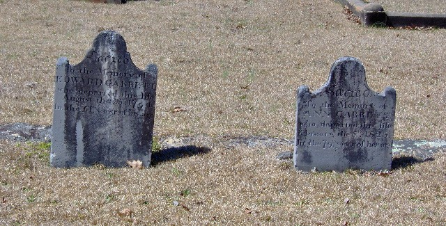
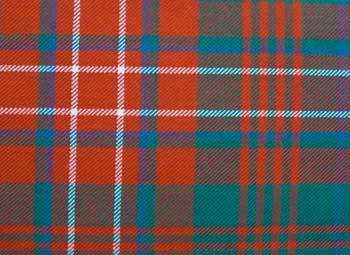
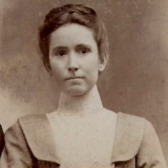
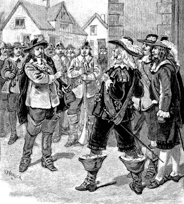
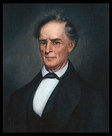
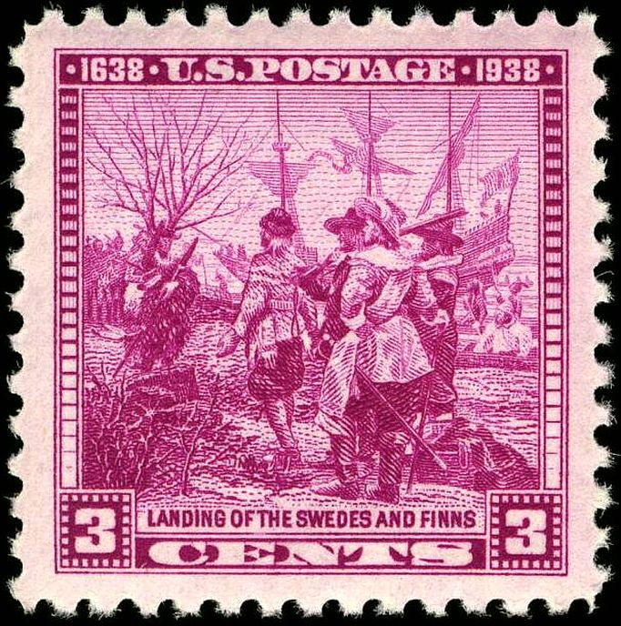

PHOTO ALBUM, GARRETT LINE

Nicholas Ware
The first reliable documentation of the Garrett ancestors in America is 1665 Virginia Land Patent on
Mataponi River of ancestor John GARRETT II (ca 1631-1706, m. Elizabeth WARE,
?Cavalier) & his ?brother-in-law Nicholas Ware. Picture is of original Nicholas Ware
descendant Nicholas Ware (b. VA 1776 d. 1824), Planter & US Senator from Georgia & Mayor of Augusta Georgia.

Sheriff Pat Garrett, New Mexico Territory
1850-1908. Maternal cousin, raised on a plantation Claiborne Parish Louisiana (34 slaves 1860). Common ancestor, John GARRETT II (b. England 1631 d. Virginia 1706) m.
Elizabeth WARE (1635-1706).

Edward GARRETT (b. ?Loudoun Co VA 1733 d. Laurens Co SC 1794)
Of Warrior Creek N Laurens Co SC (7 slaves 1790), married ANN OWSLEY (b. VA 1744 d. Laurens Co SC 1823, gdau of Major Thomas OWSLEY ). Progenitor of GARRETT clan in N Laurens Co SC, and by DNA test 2020 maternal 6th g grandfather. Also DNA confirmation of probable descent from
his son Nicholas Ware GARRETT (1765-1846, 11 slaves 1840 Laurens Co SC, specific ?16 DNA Matches to 9? of his children, 9 DNA
Matches to family of his wife Sarah BRAMLETT GARRETT) and his son 4th g grandfather Nicholas GARRETT (1799-1867, m. Ellen RHODES, 1 slave 1860 Henderson Co TN) of Middlefork TN.
A great grandmother of ancestor Anne OWSLEY GARRETT (m. 6th g gfather Edward GARRETT) was Dorothea POYNTZ (m. Rev John OWSLEY 1630-1687 Rector of Church of St. John the Baptist, Glooston, Leicestershire, Eng; g dau of
Sir John “King's Marshal” Poyntz of Reignate 1577-1617, descent from (Norman) POYNTZ of Manor of Iron Acton
Gloucestershire, from 2 POYNTZ lines on tree). Related to Georgiana POYNTZ Spencer, Countess Spencer (1737-1814,
m. John Spencer, 1st Earl Spencer), ancestors of Royal Family... Common ancestor Capt Newdigate POYNTZ, father of Dorothea, d. 5 Aug 1643 at the siege of Gainsborough, Lincolnshire, by forces of Oliver Cromwell,
while serving as a Captain in the Royal Army. Georgiana POYNTZ Spencer was a great granddaughter of
Captain Newdigate POYNTZ (see Wiki Descendants). Georgiana POYNTZ Spencer was 2nd cousin of
Thomas OWSLEY II, father of Ann OWSLEY GARRETT? Note GARRETT ancestors & Spencers on same
tree... ?14th g gfather Sir Nicholas POYNTZ (m. Lady Joan Berkeley dau
of Baron Thomas Berkeley of Berkeley Castle Glouc Eng) entertained King Henry VIII & Ann Boleyn 1535 at Acton Court, his Tudor Manor House in Gloucestershire...
Lady Joan Berkeley descent from Hugh le Despenser, 1st Baron le Despenser (b. 1223 d. Battle of Evesham 4 Aug 1265; Justiciar of England 1260 & Constable of the Tower
of London), was an ally of Simon de Montfort opposing Henry III...
Double descent from Margaret Woodville (ca 1455-1520, m. Sir Robert POYNTZ), dau of
Earl Anthony Woodville whose sister was Queen Elizabeth Woodville Plantagenet (m. King Edward IV of England)... ?Descent from 22nd g gfather King Edward I of England
(1239-1307, Plantagenet (maternal descent from William the Conqueror, 1028-1087 & Rollo of Normandy, ca 842-931)) by
14th g gfather Sir Nicholas Poyntz of Iron Acton (1501-56), maternally descended from the Courtenays, Bohuns & Eliz Plantagenet Bohun of Rhuddlan dau of King...
From Bohuns get descent from Braose, Lusignan, Clare, Neufmarché, Boulogne, Fiennes (claim descent from Charlemagne, ca 748-814) ... & esp Marshall (25th g gfather
Earl of Pembroke William Marshall "The Greatest Knight", 1146-1219) families... OWSLEY multiple Royal Descent...
(See below KY Governor William OWSLEY.)... POYNTZ & other Norman Ancestors Battle Abbey Roll
Common ancestor with President James Madison (1751-1836) on GARRETT line: John CATLETT Jr (1658-1724) of tidewater Essex Co Virginia. He was maternal great grandfather
to Madison & personal 8th ggfather. Gentry progenitor Lawrence De Catte b. 1509 Sittingbourne, Swale Borough, Kent, England. Father of John Jr was Colonel John
Catlett (ca 1622-1670), moved Rappahannock River, Virginia 1650 from Sittingbourne Eng. He was vestryman of Sittingbourne Parish VA, Colonel
of Militia & presiding Justice of "Old Rappahannock" Co 1665, & led the 1st party to explore & reach the summit of the Blue Ridge Mountains. Killed by Indians
18 APR 1670 defending Fort Port Royal, Caroline Co VA.

Elijah T. Garrett of Middlefork, Tennessee
Younger brother of maternal 3rd great grandfather James ?N.W. GARRETT (ca 1823-55). Born 1832 South Carolina upcountry, d. 1882 west TN. ?Probable
namesake of his uncle Elijah GARRETT (b. SC 1810 d. DeSoto Co MS 1872) son of Nicholas Ware GARRETT & ?brother of 4th g gfather Nicholas GARRETT of Middlefork TN.
Numerous other 1st names in family (Nancy, Frances, Miles, Edward, William, Nicholas, Elijah...) show pattern
that supports descent from Edward & Ann OWSLEY GARRETT... Son of John Harrison GARRETT, Henry Edward "Ed" GARRETT, named after Henry Bramlett & Edward GARRETT?

Hosea Garrett Sr.
Maternal cousin, 1st cousin of 4th great grandfather Nicholas Garrett (b. SC 1799) of Middlefork TN.
Born 1800 north Laurens Co (epicenter of the Garretts in SC) SC, d. Chapel Hill TX.
A founder of Baylor University and wealthy Planter (20 slaves 1860 Washington Co TX). His brother Isaac GARRETT (1808-1867), 11 slaves 1860 near Rico (Chattahoochee Hills)
Georgia SW of Atlanta. "GARRETT's Ferry" on Chattahoochee River... Son of Isaac, Corporal Lemuel GARRETT (b. 1827) of Co E 35th GA Inf CSA from Aug 1861, died of disease Nov 1864 in Savannah after being
transferred for exchange Oct 1864 from Elmira, NY Yankee prison. Captured May 6 1864 Smith Ford on Rapidan, Battle of Wilderness. Prisoner at Point Lookout MD. Had
"several sons [who] were lawyers", 1 son Dr Alexander Stephens GARRETT (May 1861-1938) Weatherford TX... Battles of 35th GA CSA - Seven Pines May 31 1862,
Seven Days Battles June 1862 (Mechanicsville, Gaines Mill, Malvern Hill...),
2nd Manassas Aug 1862, Fredericksburg Dec 1862, Chancellorsville May 1863, Gettysburg July 1863, Wilderness May 1864... Brothers of Lemuel, Wm J &
Young GARRETT were merchants of Atlanta, lived Washington Street. Young m. June Candler Garrett (1844-1947), Atlanta's 1st romantic novelist, & great niece of Asa G.
Candler founder of Coca Cola Company & Atlanta mayor. Another brother, John Edward GARRETT (d. 1913 Marshall Co AL), served Co F 25th AL Inf CSA. Battles in TN &
GA...
Theory that prominent Georgia Candlers are descended from Lt Col Wm Candler (1608-1680) whose daughter Mary m. ancestor Capt. Zachariah MOORMAN:
https://www.geni.com/people/Lt-Col-William-Candler-of-Callan/6000000001233250064
https://politicalgraveyard.com/families/10232.html
Possible DNA match from ancestor Mary Candler Moorman to the Georgia Candlers?
Son of Hosea Sr, Hosea GARRETT Jr (1831-80) of Co G, 10th Texas CSA. Shot in chest Aug 1864 Atlanta Campaign Georgia...

General William Tatum Wofford CSA (1824-1884)
Maternal 3rd cousin 5x removed, General CSA of Georgia.
Descendant of 1 of the 5 WOFFORD brothers that moved to Spartanburg Co SC in colonial times.
6th great grandfather James WOFFORD, 1 of the brothers, fought in American Revolution
(in Roebuck's Battalion of Spartan Regiment of Militia (SC), present at Battles of Kings Mt and Cowpens).
Wofford descendants also founded Wofford College of Spartanburg, SC

Joe H. Ryals of Middlefork, TN ca 1930
Confederate veteran, "so great was his love for the lost cause" was buried in his Confederate uniform (Co I 1st/27th Consolidated Reg, Tennessee Inf CSA). From Joe Ryals CSA accepted pension application 1905 - b. Dec
1847 joined 27th Inf summer 1861 Trenton TN, was at Battle of Stones River (Murfreesboro) TN Dec 1862, had 1865 parole papers, lived on "homeplace" at Middle Fork...
His brother W.N. Ryals married Catherine Susannah GARRETT,
sister of 3rd g grandfather James Nicholas GARRETT (ca 1823-1855). W.N. was also a Confederate soldier,
spent time with N.B. Forrest Cavalry, then "returned to former command" & was killed Battle of Resaca Georgia May 1864
with TN infantry. "He rode away from the Garrett place
[Middlefork] [July] 1863 never to return". His rifle, etched with "W.N. Ryals" is in the hands of a collector...
W.N. Ryals served with the 51st/52nd Consolidated TN Inf Regiment CSA from 1862, & about 10 months in 1863/64 with N.B. Forrest (21st Wilson's) TN Cav.
Possible battles with Forrest: Chickamauga Sept '63, Paducah March '64, Ft Pillow April '64... Brother John Micham Ryals served in Co H, 21st TN Cav CSA.
Other Confederate soldiers from this area were the 4 brothers of maternal 2nd g grandmother Sarah Eliz Thomas GARRETT (d. 1904 near Bowie TX, no kin to Nancy
Ann Thomas line). They served with the 27th
TN Inf CSA. ?3 were killed, 1 at Perryville & 1 at Murfreesboro + ? ... Some battles of 27th TN Inf CSA: Shiloh TN (April 1862), Munfordville KY (Sept 1862), Perryville KY (Oct 1862),
Murfreesboro TN (Jan 1863), Chickamauga GA (Sept 1863), Atlanta GA (July 1864). Their other sister Nancy Emmaline Thomas m. 1st Lt Leander RHODES (also GARRETT kin, d. 1922 Hood
Co TX) of 52nd Regiment TN Inf Confederate. Battles of 52nd TN CSA: Shiloh, Perryville, Murfreesboro, Chickamauga, Bentonville...
Brother of 3rd g grandfather James N. GARRETT, John Lafayette GARRETT (b. SC 1831 - d. near Arkadelphia AR 1874, wife d. Rockwall TX 1929), served in Co H, 37th AR Inf
Regiment Confederate (same battles as 11th MO CSA below).
Sarah Eliz GARRETT (1848-1887), sister of 2nd g grandfather John Harrison GARRETT, m. Joseph Parrish Walker (b.1836 Pittsylvania Co VA d.1908 Chester Co TN,
"HE WAS A CONFEDERATE SOLDIER" on tombstone)... Sister of Joseph Parrish Walker, Sophia Ann Walker Ryals (d. Montague Co TX 1940), m. Charles Henry Ryals (Co. I 27th TN Inf
CSA), brother of Joe Ryals.

Port Royal, Tennessee
Maternal great grandmother Florence WILCOX GARRETT (1877-1962 Montague Co TX) is the source of red hair in the family.
She was the daughter of Wilson Wilcox, Confederate veteran of 11th MO Inf CSA. They were descendants of Samuel WILCOX (1737-1811, 1787 Davidson Co TN, 1801 Montgomery Co TN tax list 4 slaves),
pioneer founder of Port Royal, Tennessee. 2020 test DNA Match (to sons John EARLE WILCOX & ancestor Charles B. Wilcox) confirmed to 5th g grandfather Samuel WILCOX... 1811 Samuel WILCOX Inventory of Estate Montgomery Co TN, 520 a. land, 21 Negroes...
Samuel WILCOX served in VA Militia (1761), Lord Dummore's War (1774) & American Revolution ?from (ca 1748) NE of Front Royal near mouth of Manasses Run &
Shenandoah River now Warren Co (old Frederick Co) VA. 12th/8th/4th VA
Regiments under command of Col James Wood & others in Revolution 1777-1782. His units saw action in the Battles of Brandywine, Germantown,
Monmouth & the Siege of Charleston... Samuel Wilcocks on Capt. James Wood's (later governor of VA) roll, paid at Romney
& Winchester for Dunmore's War 1774.
His ?brother John WILCOX Jr served in the the French & Indian War (ca 1756) from Frederick Co Va under command of Capt George Mercer
(also aide-de-camp to George Washington)... 2 sisters of Samuel Wilcox: 1 - Anne WILCOX (d. 1807 Stanford KY) m. Ensign Wm Warren - he served with 8th Reg of
VA, 1776-1778. Ca 1785 commanded fort on frontier of Jefferson Co, KY (?William Warren's Station, now Boyle Co "[N]E of Junction City on
headwaters of Balls Branch", Dix River = Warrenwood Manor on
highway 127); 12 blacks 1800; gsons of Ensign Wm Warren, John Fouche Warren (22 slaves 1860, son Samuel Wilcox Warren 1843-1899 Co K 18th MS
Inf. CSA, daughter Annie Wilcox Warren 1834-1918 m. Dr. James Montgomery Holloway 1833-d. Louisville 1905 distinguished physician of the South & Major CSA...) & SAMUEL WILCOX Warren, built Warren Manor
1856. 2 - Lettice WILCOX (d. 1800 Danville KY) m. John Reed
("a handsome, educated & well traveled gentleman", parents of Thomas Buck Reed 1787-1829 U.S. Senator from MS) who est. 1779 Reed's Station ?2
m. SSE of old Danville KY. July 1794 Huston's Battalion Kentucky Mounted Rifles (August Battle of Fallen Timbers?)... Ensign Wm Warren, Deputy
Sheriff of Lincoln Co KY 1792 under High Sheriff [Gov.] Isaac Shelby, Gentleman.
2 granddaughters of Anne WILCOX Warren (sister of 5th g grandfather Samuel WILCOX) m. sons of Governor Isaac Shelby of Kentucky (1750–1826). The 1st was Nancy WILCOX
Warren Shelby (buried 1849 "Travellers Rest" Cem. KY, plantation of Gov. Shelby; husband Evan Shelby 23 slaves Millwood Plantation Lincoln Co KY 1850). The 2nd,
Maria Boswell Warren Shelby (m. Isaac Shelby Jr of Arcadia Plantation Lincoln Co KY), had daughter Susan
Hart Shelby Magoffin (1828-1855, 3rd cousin 4x removed, "of the noblest blood of Kentucky")
who m. Samuel Magoffin (Santa Fe trader, brother of KY Gov. Beriah Magoffin) & wrote
"Down the Santa Fe Trail and into Mexico: The Diary of Susan Shelby Magoffin, 1846-1847"...
Sister of Susan Hart Shelby Magoffin (d. 1855), Anna Nelson Shelby Magoffin, m. Gov. Beriah Magoffin & had Beriah Magoffin III of Morgan's Cavalry CSA (6th KY), d.
1932 McAlester OK...
Daughter of Gov Isaac Shelby of KY, Nancy Shelby, m. Rev. Samuel Kelsey Nelson, son of Capt Henry Nelson Jr (1745-1825) who was Captain of
Dunmore Co VA Militia Company in 1774 in which 4th g gfather William THOMAS (ca 1750-1844) was Ensign...

Wilson (b. ca 1815 TN d. ca 1845)
Could be that 2nd g gfather Wilson WILCOX mother
was Scotch-Irish (?WILSON surname=1st most common in N Ireland, 3rd most common in Scotland with highest incidence of red hair in world), which might
explain the RED hair dominance. Get DNA MATCH (9, for 8 to 20 cM) to family of Major David Carroll
WILSON, Sr (b. ca 1733 Newville PA d. 1803 Gallatin Sumner Co TN, m. Jean Rowan (means “red-haired” in Scotch-Irish), American Revolution NC). Lots of WILSONs in 1830 Census Stewart Co TN with ancestor
Charles B. WILCOX... Strong trend of redheads in this family...
Major David WILSON was related to this Zaccheus WILSON: "A Family History, Zacheus Wilson"
(1805-1843), Capt. Republic of Texas Army [Mier Expedition]. His Ancestors and
Descendants" by Col. William Wood Cole. According to Mr. Cole's book, Zacheus Wilson [b. 1713 PA d. 1796 GA, father of Major David; 4 slaves 1796
Lexington, Oglethorpe Co GA] was the son of John Wilson b.
1678 in Lisburn, County Antrim, N Ireland d. abt 1745 near Newville PA, [m. Sarah Reid (from "older Scots red(e) ‘red’, denoting someone with red hair or ruddy compexion"), ?lived near Rocky Spring Presb. Church, Letterkenny Twp Franklin Co PA N of Chambersburg]. This John was the son of John Wilson
b. 1650 Lanarkshire, Scotland d. after 1684 near Newville PA, who was the son of Gilbert Wilson b. abt 1620 Lanarkshire, Scotland d.
aft 1671... GG gson of ancestor Zacheus WILSON (1713-96), SHERIFF George A. WILSON (1829-95) of Collin Co TEXAS 1867-9.
Zacheus WILSON (b. 1713) son Capt Zacheus WILSON (b. ca 1733 Newville, Cumberland Co PA d. 1824 Sumner Co TN) was a Signer of the Mecklenburg [NC] Declararion of Independence 1775. Zacheus WILSON (b. 1713) nephew Rev Samuel
WILSON (b. 1754 near Rocky Spring Presb. Church Letterkenny Twp Franklin Co PA d. 1799 Newville PA) was a graduate of Princeton College 1782 & served Big Spring Presb.
Church at Newville PA. The Scotch Irish started coming to America especially after abt 1710 & the Cumberland Valley in Pennsylvania was a center for settlement. It
became a gateway for migration to the South, 4 WILSON brothers moved ca 1760 from Newville, PA to Mecklenburg Co NC. Of the 4, Robin d. Charlotte NC (descendants moved
Williamson Co TN, Huntsville AL...); Major David, Samuel (wounded French & Indian War) & Capt Zacheus d. Sumner Co TN. Personal descent from Zacheus WILSON (b. 1713;
m. Armstrong, Border Reivers?)
& 1 of these 4 sons. 5/19/22 WILSON descendants DNA Match: 4 to Old Robin, 3 or 4? to Major David, 1 to Capt Zacheus & 1 to Isaac who moved to a different state...
A son of Zacheus WILSON (b. 1713), Robert "Old Robin" Wilson (1737-93), m. Eleanor Wilson (née Carothers) of Steele Creek, Mecklenburg Co, NC, one of the "most heroic women of the American Revolution".
Major David Carroll WILSON was said to be a hero of the Battle of Ramseur's Mill (NC) on June 20, 1780, American Revolution...
Jacqueline Wilcox (Jane Ross), full sister of 2nd g gfather Wilson WILCOX, gave mother's birthplace on 1880 & 1900 TX Census as Scotland...
WILSON Lowland Scots Family Origins: English (Angles) breeding with indigenous Brittonic Celts around the greater England/Scottish border regions?
WILSON Confederates: Judge Samuel F. WILSON (1845-1923, lost arm at Chickamauga, mother Nancy Moore WILSON 5 slaves 1850), 2nd TN Inf CSA, & his brother Richard of Gallatin TN; g gsons of Samuel WILSON
(bro of Maj David, wounded F & I War)...

Florence Wilcox Garrett (b. 1877 Montague Co Texas d. 1962 Bowie, Texas)
Maternal great grandmother, she & at least 2 of her siblings had red hair probably inherited from the Scotch-Irish WILSON line of her paternal grandmother.
Memorable visit to her home at Bowie, Texas ca 1960 with grandfather O.W. GARRETT.

Robert Coleman Bone (b. 1846 Carroll Co MO d. 1924 Benton Co AR)
1880 Census, farmer near Richmond, Ray Co Missouri.
Step brother of 2nd g grandfather Wilson W. WILCOX (b.
1838 Stewart Co TN, 1850 border of Livingston & Carroll Co MO, 1860 Lawrence Co MO, 1867 Claiborne Parish LA, 1870 Whitesboro Grayson Co TX, d. 1884 near Bowie
Texas). He served in Company F 11th Missouri Inf Confederate with Wilson WILCOX, Wilson's father Charles C.P. WILCOX (b. ca 1810 TN d. in hospital 14 Dec 1862
Ft Smith AR while Confederate soldier; may have been wounded Dec 7 at Battle of Prairie Grove AR, Hunter's MO Reg - Quantrill's Raiders were
present at battle with John McCorkle & John Jarrette, bro-in-law of Cole Younger & member of James-Younger gang...), Wilson's bro-in-law 1st Sgt Job M. Ross
(b. 1833 Levasy Jackson Co MO, m. 1860 Jacqueline WILCOX (1842-1919) Lawrence Co MO, 1870 Ray Co MO, 1880 Jack Co TX, d. Madisonville Texas 1917) & his brother Reverend David Bone
(b. 1843 Carrollton MO - 1944, 1880 Minister St Joseph Missouri, 1910 Kearney MO, 1930 "Methodist South", buried Richmond Missouri;
click for Reverend David Bone). Some battles of 11th MO CSA: Prairie Grove AR (Dec 7 1862), Helena AR (July 4 1863),
Pleasant Hill LA (April 9 1864) & Jenkins Ferry AR (April 30 1864)... Commander Company F 11th MO CSA: Capt David Crockett Howard (b. 1838 MO, 1850 Bentonville AR,
1860 Mt Vernon, Lawrence Co MO (father was merchant), post war El Dorado Union Co AR, d. 1917.)... Co F 11th MO CSA with Gen Kirby Smith surrendered as prisoners
New Orleans May 1865, paroled Shreveport June 1865...
In 1832 Am Rev Pension app, maternal gfather of Charles C.P. WILCOX, Lt Thomas FRENCH (1753-1848, 21 slaves 1830 Stewart Co TN), gave President Andrew Jackson as personal reference. Says he was in KY in 1780
& middle TN 1781.

John Harrison GARRETT 1903 (b.1850 Middlefork, Henderson Co Tennessee d. 1925 Bowie, Montague Co Texas)
Maternal 2nd great grandfather. The aunt of John Harrison GARRETT (sister of his father James NW GARRETT) was Margaret Ann Garrett, m. Willis N. Arnold (4 Blacks
1860) had farm right next to the main Garrett place where John Harrison was raised with grandfather Nicholas. Close relation to Willis N. Arnold (prob. uncle), Willis Arnold (50 Blacks, 845 acres,
129 bales cotton 1860; next to Unity Baptist Church?) was largest? slaveholder in neighborhood. 2 sons of Margaret Garrett & Willis N. Arnold became doctors
Lexington & Jackson, TN. Musical entertainer Eddy Arnold (1918 - 2008) was descendant of Martin Arnold, brother of Willis N. Arnold...
Discovered ancestry (good DNA MATCHES) of wife of John Harrison GARRETT, Sarah Eliz THOMAS (1849-1904): dau of William M. THOMAS (b. NC 1809 d. 1890, m. Fowler
1831 Hardeman Co TN widow of PEARSON, 2 slaves 1860) of Jacks Cr TN who is
linked to the family of Rev Robert THOMAS (b. 1733 Talbot Co MD d. 1817 SC; bro of General Tristram THOMAS 1752-1817, Am Rev, 13 slaves 1817) of Marlborough Co SC &
his son Elijah THOMAS (b. Anson Co NC 1775 d. Neshoba Co MS 1849, m. Elizabeth PEARSON, 7 slaves 1849) by Wm M. naming son Wiley Berry THOMAS, William the son of Elijah "Also
Known As William M Thomas", etc ...
Mother of John Harrison GARRETT, Margaret SHACKELFORD GARRETT (b. 1825 TN d. 1905 Bowie TX), had at least 2 brothers
Confederate soldiers: Hiram (1860 overseer Panola Co MS) & Sgt Wm SHACKELFORD, both Arkansas CSA. They were children of James Perry & Mary SEATON
SHACKELFORD (3 slaves1830 Henderson Co TN)... 1st cousin 5x removed Capt Willis Arnold Hopgood SHACKELFORD, 26th MS Inf CSA (DNA Match)...

Charles B. Wilcox (b. ca 1775 near Front Royal, Old Frederick County Virginia d. Aft. 1840 Stewart County Tennessee)
Maternal 4th great grandfather, WILCOX DNA MATCH. He participated spring of 1818 in the 1st Seminole Indian War, Bell's Company of the 1st Volunteer Mounted Gunmen of West
Tennessee. Map & LINK explain campaign...
Brother-in-law of 5th g gfather Samuel WILCOX (m. Hannah Geraldine EARLE) was the frontiersman John EARLE, Captain of Rangers (SC 3rd Regiment (Rangers) &
Turkey Cr Reg, 1778-83) around the Rutherford Co NC area at Earle's Fort in the American
Revolution. His son was General John Baylis EARLE
- (1766-1836).
The EARLES LINK...
Maj. Samuel Noah EARLE III, "Gent." was father of Hannah EARLE WILCOX & Capt John EARLE, plantation located 1747 mouth of Muddy Run (?now Passage Cr) W of Front Royal now Warren Co VA.

Captain Robert Sorrell (b. 1618 Writtle, Essex England d. 1676 Jamestown Virginia)
Maternal 9th g gfather, by 2 of his g gdaughters (sisters): Lettice SORRELL m. John WILCOX (father of Samuel), Anna SORRELL m.
Samuel EARLE III (father of Hannah Geraldine Earle Wilcox); ancestors Samuel & Hannah Geraldine Wilcox were 1st cousins?...
Capt Robt Sorrell is the earliest of all known ancestors in America, claiming arrival at Jamestown 1635. Of nearby Chickahominy, James City County Virginia. Died defending
Jamestown for Gov. Berkeley "in his Majesty's service" 1676, Bacon's Rebellion. Actual 1657 quote ascribed to him addressing his servant (referring to his freedom) - "William, if thou wilt be ruled by me,
I will prescribe one to thee that will plead thy cause and ask thee nothing."... ?11 DNA MATCHES to Earle/Sorrell...
5th g gmother Martha Patsy SORRELL (1757-1840, m. Lt Thomas FRENCH) was probably also a descendant of Capt Robt SORRELL...
Good DNA MATCH to descendant of Charles Buck (1710-71, planter of W of Front Royal Virginia) & 6th g gmother Lettice SORRELL WILCOX Buck
(3rd marriage). 3rd cousin 4x removed Lucy Buck (1842-1918) of Bel Air Plantation (11 slaves 1860) wrote
"Shadows On My Heart" Civil War Diary. She tells of entertaining General Robert E. Lee at her home & singing Southern songs for him...

Governor William Owsley of Kentucky (b. 1782 Loudoun Co, Virginia, moved E of Stanford Lincoln Co KY 1783, d. 1862 near Danville, Kentucky)
2nd cousin 6x removed, grandson of brother of 6th g gmother Ann Owsley GARRETT (1744-1823, m. Edward), Capt. Thomas S. OWSLEY III (1731-96). 16th
governor of Kentucky, 31 slaves 1860. Is one of 3 maternal cousins who were Kentucky governors, along with James CLARK & Thomas E.
Bramlette (Garrett line). 2 other
Kentucky governors were related: Isaac Shelby (Wilcox) & Joseph Desha (Reese). Also distant cousin to 2 recent Beshear KY Governors:
common ancestor Benoit Brasseur (b. ca 1620 ?France d. 1663 MD), father of ancestor Susannah Brasseur Duvall (m. Mareen DUVALL, DNA Match) & Robert Brasseur
(1646-1712), ancestor of the 2 Beshear Governors of Kentucky...
Pleasant Retreat, Governor Owsley mansion in Lancaster, Garrard County during his early political career, is listed on the National Register of Historic Places...
4 good OWSLEY/POYNTZ DNA MATCHES indicating descent from Anne OWSLEY GARRETT (1744-1823, m. 6th g gfather Edward GARRETT)... Gov Wm OWSLEY
was 1st cousin to Bryan Young OWSLEY (b. 1798 Crab Orchard KY buried 1849 Danville KY), US Congress 1841-1843.

Peter Gunnarson alias Rambo (b. 1611, Hisingen, Gothenburg, Sweden d. 1698, Wicaco, Pennsylvania)
Verified 9th g grandfather on maternal 2nd g grandmother Sarah Eliz THOMAS GARRETT (1848-1904, m. John Harrison GARRETT) line (Fowler/Pinson). Early settler New Sweden, PA 1640:
RAMBO... Met with Governor WILLIAM PENN
at "Upland", now Chester, Pennsylvania, when their colony was taken over by the British on 27 October 1682... ?Half a dozen or so DNA MATCHES on RAMBO.